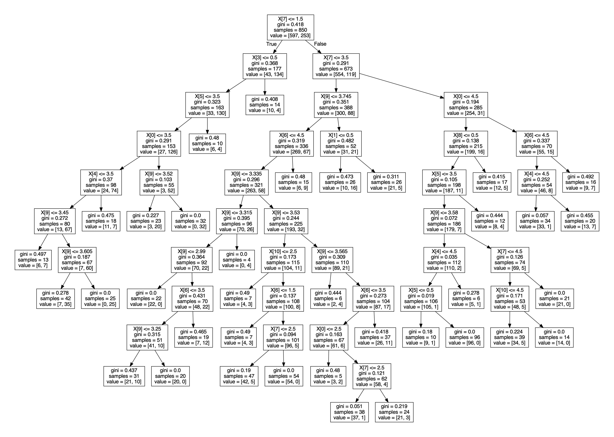
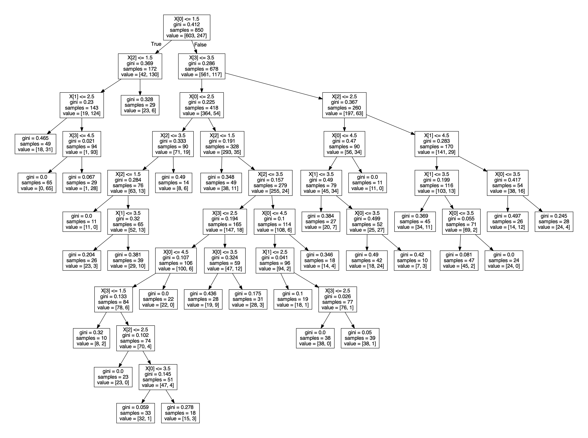

Middlebury Relationship
Predictor
AI Final Project by Otis Milliken and Quin McGaugh
Using Decision Trees with Random Forrest to Predict Relationship Status
View the Final Paper on Google Docs.
View the Project on GitHub.
View the Project Proposal.
View the Survey Form.
Try Out Our Project
We'd love for you to try out our project! To do so, please follow the steps below. Feel free to email us if you run into any issues
-
To try out the project clone the repository
-
Some libraries are required to run this project. Please run the following commands in your terminal
pip install sklearn
pip install graphviz
pip install numpy
pip install pandas
pip install matplotlib
pip install tabulate -
The project can be run by python3 main.py whilst in the project folder. For a list of configurable options (including forrest size, method, and test data) run
python3 main.py -h
Reasoning behind project
While searching for a project topic, our group decided we wanted to walk away with something applicable to our average Middlebury student, but have some kind of impact beyond this project. We decided upon using a dataset created by former Sociology Professor Peggy Nelson for her research methods class up until 2020.
The dataset contains 987 responses which although is small compared to other dataset, it is quite large compared to the Middlebury student population of 2580. The dataset itself is a survey of Middlebury students that asks a variety of social questions from relationship status to GPA.
In addition to the data we got from the past survey, we also collected 60 responses as well from the current year that we could test our trees against as well.
Our goal was to create a fun algorithm that can predict the relationship status of Middlebury Students based on their response to a series of non-academic, social questions about preferences and beliefs at Middlebury.
The Data
We gained the survey from a 2011-2020 survey by Professor Peggy Nelson that contained 987 responses. It has 18 questions which are:
- Are you currently in a relationship? (yes/no)
- Middlebury provides me with opportunities to find someone with whom to have a relationship (1-5)
- Middlebury provides me with opportunities to find someone with whom to hook up (1-5)
- The kind of person I ideally want a relationship with goes to Middlebury (1-5)
- The kind of person I ideally want to hook up with goes to Middlebury (1-5)
- I am actively looking for someone to have a relationship with at Middlebury (1-5)
- I am actively looking for someone to hook-up with at Middlebury (1-5)
- I am satisfied with the opportunities I have to meet new people at Middlebury (1-5)
- The potential for marriage is important before I date someone (1-5)
- Where do you think you are most likely to find a marriage or long-term partner(s)? (Friends/Family/Graduate School/Job or Career/Middlebury/Other)
- Respondent's self-reported gender (Male/Female/Other)
- Self-reported grade point average (0.0 to 4.0 scale)
- Self-reported social class (Lower/Middle/Upper Middle/Upper)
- Number of siblings
- Are your parents married? (yes/no)
- Self-reported race
- Where do you live this semester? (Dorm/House/Off)
- Class year at Middlebury (First/Sophomore/Junior/Senior)
Basic overview of how our code works
Our code is split into 3 parts: the main class, the Decision tree class, and the Random Forrest class.
The Decision Tree class can build a tree, render a tree, and classify an observation based on a created tree
-
This is our Decision Tree Class Methods
class DecisionTree:
#Constructor for Decision Tree method
def __init__(self, features, classification, method, id)
#Build tree method
def buildTree(self)
#Renders a tree using graphviz and matplotlib
renderTree(self)
#Classifies a new observation
def classifyTree(self, observation) -
This is our Random Forest Class Methods
class RandomForest:
#constructor for the Random Forest Method
def __init__(self, numtrees, trainingfeat, trainingclass, method)
#Builds the Random Forest using the train dataset
def buildForest(self)
#Classifies an observation using the Random Forest that we built previously
def classfiyObservation(self, observation, method)
#Tests the Accuracy of our model on the testing data
def testAccuracy(self, testingfeat, testingclass)
#Finds the optimal tuning parameters
def findOptimal(forest, trainingfeat, trainingclass, splitmethod, testingfeat, testingclass)
printAccuracy(self) -
Our main class is called when program is executed. It parses the arguments passed by the user through command line and trains the model
Random Forest Algorithm Explained
Random Forests are way to obtain greater accuracy with decision trees. In essence, it works by simulate a ton of decision trees and return the majority classification of the testing data among them. Each decision tree is trained on random data entries with replacement from the training set and with a random set of features. The idea is to have enough trees so that outlying data and features don't have too much of an influence on classification. There is some randomness in random forests so it might not classify data in the same way each time.
We also use two different methods to create our decision trees: Gini and Entropy.
Gini Index is calculated: 1 - Σ p^2
Entropy is calculated: - Σ p * log(p)
It depends on the data set on which one works better. We didn't find a huge difference between the two.
Tree Parameters and Optimization
The trees in our Random Forest can take in different parameters. These include Max Depth, Min Sample Split, Min Impurity Decrease.
- Max Depth
- This is the max depth of our tree. Having the largest tree is not always recommended because it can lead to overfitting which essentially means that data gets misclassified because to many splits occur.
- Min Sample Split
- This is the minimum number of times that the tree should split. This tackles underfitting of trees. Essentially, if a tree splits too little then it misclassify data because a lot of data is classified together
- Min Impurity Decrease
- The gini method uses an impurity calculation to decide which features to split on. The min impurity decrease decides if theres enough of an impurity to split
We created a find optimal method in our Random Forest class that attempts to find the best possible tuning parameters. The possible Max Depth options it tests are 2, 5, 8, 11, None; the possible Mine Sample Split options it tests are 2, 5, 10, 20; lastly, the possible min impurity decreases that are tested are: 0 to 0.2 with an increment of .02
After aprox. 3 hours of running, we found that our optimal accuracy was 90.63% with a max depth of 8, a min sample split of 20, and a min impurity decrease of 0.0. This is much better than our lowest accuracy of 82.3%.
Algorithm performance
| Method | Number of Trees in Forest | RunTime | Accuracy |
|---|---|---|---|
| Gini | 300 | Alot? | Alot? |
Our Project Conclusion
Open Picture Below in New Tab to See Whole Tree

The three questions which had the highest importance on a students relationship status were: looking for a relationship, looking for a hookup, and gpa. The first two were expected since a student wouldn’t often be looking for relationship if they were already in one; similarly, a student wouldn’t look for a hook up if they were in a relationship. GPA had unexpectedly high importance. Overall, people in relationships tended to have lower GPA’s, however, the high importance seems to also be because of scale nature GPA’s which allows it to split at a very specific point. Other interesting questions with relatively high importance were: siblings, being white, being a woman, and being satisfied with the amount of new people one meets at meet. In future studies, one could dive into these questions with greater depth and try to understand why they held such importance.
On the algorithm side, our optimal accuracy reached was 90.63% and had the parameters of a max depth of 8, a minimum sample split of 20, and a minimum impurity decrease of 0.0. This accuracy was significantly better than the lowest accuracy of 82.3%.
For the full list of question importance, additional info, and detailed analysis see our final paper on Google Docs.
Example Tree Renderings
 Bugs and difficulties
- Getting used to python
- One of our initial difficulties was getting used to python and the python libraries that we had to use. These included python with sci-learn, numpy, pandas, graphviz, and matplotlib.
- Preprocessing Data
- Our data was not immediately usable so we had to figure out a way to make it into the right format
- Figuring out how sklearn and pandas
- We had some trouble halfway through the project with the way that sklearn and pandas handled data. Specifically, pandas worked with dataframes which are slightly different than other data structures that we are used to
- Long run time
- Our project took a significant time to run which meant that if code was wrong or parameters were set incorrectly, it would take us a while to find out.